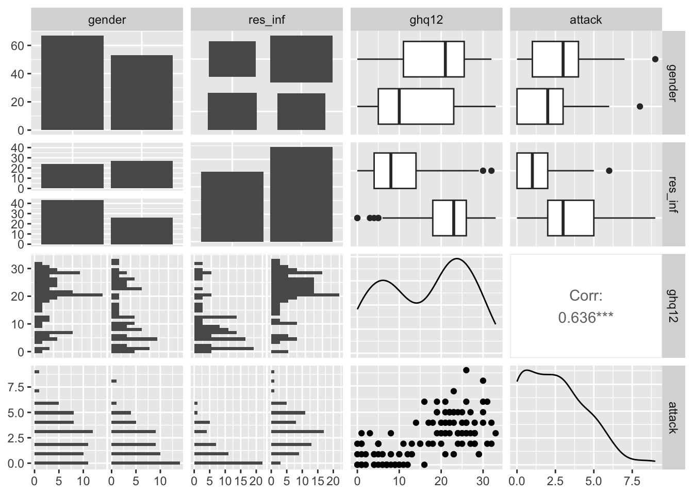
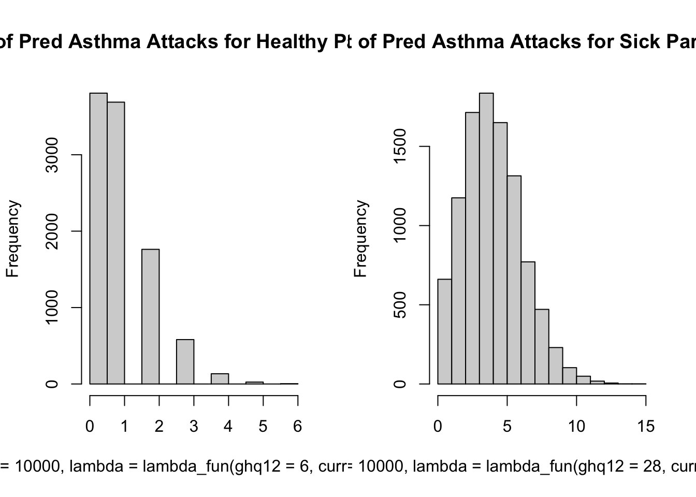

# Installing Required Packages
# intsall.packages(readxl)
# install.packages(skimr)
# intsall.packages(gtsummary)
# intsall.packages(GGally)
# install.packages(epiDisplay)
# install.packages(broom)
# install.packages(tidyverse)
# Loading Required Packages
library(readxl)
library(skimr)
library(gtsummary)
library(GGally)
library(epiDisplay)
library(broom)
library(tidyverse)33 Poisson Regression Model
33.1 Libraries for this lesson
33.2 Introduction to Poisson Regression Model
The Poisson regression model (PRM) is an appropriate model for studying counts response variable, which follows the Poisson distribution. Thus, the values of the response variable are non-negative integers. It is a type of Generalized linear models (GLM) whenever the outcome is count. It also accommodates rate data as we will see shortly. Although count and rate data are very common in medical and health sciences. For instance, how the colony counts of bacteria are associated with different environmental conditions and dilutions. Another example related to vital statistics, which is related to infant mortality or cancer incidence among groups with different demographics. In such scenarios, the benchmark model PRM is more appropriate than the linear regression model (LRM).
Basically, Poisson regression models the linear relationship between:
outcome: count variable (e.g. the number of hospital admissions, parity, cancerous lesions, asthmatic attacks). This is transformed into the natural log scale.predictors/independent variables: numerical variables (e.g. age, blood pressure, income) and categorical variables (e.g. gender, race, education level).
For example, we might be interested in knowing the relationship between the number of asthmatic attacks in the past one year with sociodemographic factors. This relationship can be explored by a Poisson regression analysis.
We know that logistic regression allows us to obtain the odds ratio, which is approximately the relative risk given a predictor. For Poisson regression, by taking the exponent of the coefficient, we obtain the rate ratio RR (also known as incidence rate ratio IRR),
\[ RR = \exp(b_p) \]
for the coefficient \(b_p\) of the p’s predictor. This is interpreted in similar way to the odds ratio for logistic regression, which is approximately the relative risk given a predictor.
33.3 Mathematical Formulation of the Model
The Poisson distribution for a random variable Y has the following probability mass function for a given value Y = y \[
P(Y|y=\lambda) = \frac{e^{-\lambda}\lambda^y}{y!},
\] for \(y = 0, 1, 2, \dots\). The Poisson distribution is characterized by the single parameter \(\lambda\), which is the mean rate of occurrence for the event being measured. For the Poisson distribution, it is assumed that large counts (with respect to the value of \(\lambda\)) are rare. And the rate \(\lambda\) is determined by a set of \(k\) predictors \(X = (X_1,\dots, X_k)\). The expression relating these quantities is \[
\lambda = \exp(\beta)
\]
Thus, for observation i the simple model model for Poisson rate parameter \(\lambda_i\) is given by
\[ \log \lambda_i = \beta_0 + \beta_1 x_{i1} + \dots + \beta_p x_{ip} \]
or equivalently
\[ \lambda_i = e^{\beta_0 + \beta_1 x_{i1} + \dots + \beta_p x_{ip}} \]
Together with the distributional assumption \(Y_i ∼ Poisson(\lambda_i)\), this is also called the Poisson log-linear model,
In Generalized Linear Model, response variable usually originates in the form of pdf which generally fits to the exponential family (EF) of distribution. Since Poisson distribution is the member of EF. So, we define the density function of EF as
\[ f(y_i, \theta_i, \lambda) = \exp\left[\frac{y_i\theta_i - b(\theta_i)}{\alpha(\lambda)} + c(y_i, \lambda)\right], i = 1, 2, \dots,n \] Here,
- \(\theta_i\) represents the link function
- \(b(\theta_i)\) is the cumulant
- \(\alpha(\lambda)\) is the dispersion parameter
- \(c(y_i, \lambda)\) is the normalization term
Since the value of dispersion parameter for the Poisson distribution is one. The PRM is generally applied in the situations, when the response \(y_i\) is in the form of counts, that is, \(y_i = 0, 1, 2, \dots\) and distributed as \(P(\mu_i)\), where \(\mu_i = exp ( x^T_i \beta)\) and \(log (\mu_i) = x^T_i \beta\), while \(x_i\) denotes the \(i\)th row of design matrix \(X\) having order \(n \times r\) while \(\beta\) is a coefficient vector of order \(r \times 1\), where \(r = p + 1\) are the explanatory variables.
33.4 Example
To demonstrate the method of PRM, we consider the asthma attack data set(https://github.com/drkamarul/multivar_data_analysis/tree/main/data). The data on the number of asthmatic attacks per year among a sample of 120 patients and the associated factors are given in 05_asthma.csv.
The dataset contains four variables:
gender: Gender of the subjects (categorical) {male, female}.res_inf: Recurrent respiratory infection (categorical) {no, yes}.ghq12: General Health Questionnare 12 (GHQ-12) score of psychological well being (numerical) {0 to 36}.attack: Number of athmatic attack per year (count).
33.4.1 Exploring the data
Let’s begin by looking at the data.
asthma <-
read_csv("../data/05_asthma.csv")Rows: 120 Columns: 4
── Column specification ────────────────────────────────────────────────────────
Delimiter: ","
chr (2): gender, res_inf
dbl (2): ghq12, attack
ℹ Use `spec()` to retrieve the full column specification for this data.
ℹ Specify the column types or set `show_col_types = FALSE` to quiet this message.asthma %>%
head(n = 10)# A tibble: 10 × 4
gender res_inf ghq12 attack
<chr> <chr> <dbl> <dbl>
1 female yes 21 6
2 male no 17 4
3 male yes 30 8
4 female yes 22 5
5 male yes 27 2
6 male yes 33 3
7 female yes 24 2
8 female yes 23 1
9 female yes 25 2
10 male no 28 233.4.1.1 Structure of the dataset
str(asthma)spc_tbl_ [120 × 4] (S3: spec_tbl_df/tbl_df/tbl/data.frame)
$ gender : chr [1:120] "female" "male" "male" "female" ...
$ res_inf: chr [1:120] "yes" "no" "yes" "yes" ...
$ ghq12 : num [1:120] 21 17 30 22 27 33 24 23 25 28 ...
$ attack : num [1:120] 6 4 8 5 2 3 2 1 2 2 ...
- attr(*, "spec")=
.. cols(
.. gender = col_character(),
.. res_inf = col_character(),
.. ghq12 = col_double(),
.. attack = col_double()
.. )
- attr(*, "problems")=<externalptr> 33.4.1.2 Summary
skim(asthma)| Name | asthma |
| Number of rows | 120 |
| Number of columns | 4 |
| _______________________ | |
| Column type frequency: | |
| character | 2 |
| numeric | 2 |
| ________________________ | |
| Group variables | None |
Variable type: character
| skim_variable | n_missing | complete_rate | min | max | empty | n_unique | whitespace |
|---|---|---|---|---|---|---|---|
| gender | 0 | 1 | 4 | 6 | 0 | 2 | 0 |
| res_inf | 0 | 1 | 2 | 3 | 0 | 2 | 0 |
Variable type: numeric
| skim_variable | n_missing | complete_rate | mean | sd | p0 | p25 | p50 | p75 | p100 | hist |
|---|---|---|---|---|---|---|---|---|---|---|
| ghq12 | 0 | 1 | 16.34 | 9.81 | 0 | 7 | 19 | 25 | 33 | ▆▅▃▇▅ |
| attack | 0 | 1 | 2.46 | 2.01 | 0 | 1 | 2 | 4 | 9 | ▇▇▅▁▁ |
33.4.1.3 Descriptives
asthma %>%
tbl_summary()| Characteristic | N = 1201 |
|---|---|
| gender | |
| female | 67 (56%) |
| male | 53 (44%) |
| res_inf | 69 (58%) |
| ghq12 | 19 (7, 25) |
| attack | 2.00 (1.00, 4.00) |
| 1 n (%); Median (IQR) | |
33.4.1.4 Pairs
ggpairs(asthma)
33.4.2 Fitting the Poisson Regression Model
Using the glm() function to fit a Poisson regression model. The model formula specified attack as the response variable and gender(gender), recurrent respiratory infection (res_inf) and, GHQ12 (ghq12) as predictor variables.
33.4.2.1 Univariate Analysis
pois_attack1 <- glm(attack ~ gender, data = asthma, family = "poisson")
summary(pois_attack1)
Call:
glm(formula = attack ~ gender, family = "poisson", data = asthma)
Coefficients:
Estimate Std. Error z value Pr(>|z|)
(Intercept) 1.02105 0.07332 13.925 <2e-16 ***
gendermale -0.30000 0.12063 -2.487 0.0129 *
---
Signif. codes: 0 '***' 0.001 '**' 0.01 '*' 0.05 '.' 0.1 ' ' 1
(Dispersion parameter for poisson family taken to be 1)
Null deviance: 229.56 on 119 degrees of freedom
Residual deviance: 223.23 on 118 degrees of freedom
AIC: 500.3
Number of Fisher Scoring iterations: 5pois_attack2 <- glm(attack ~ res_inf, data = asthma, family = "poisson")
summary(pois_attack2)
Call:
glm(formula = attack ~ res_inf, family = "poisson", data = asthma)
Coefficients:
Estimate Std. Error z value Pr(>|z|)
(Intercept) 0.2877 0.1213 2.372 0.0177 *
res_infyes 0.9032 0.1382 6.533 6.44e-11 ***
---
Signif. codes: 0 '***' 0.001 '**' 0.01 '*' 0.05 '.' 0.1 ' ' 1
(Dispersion parameter for poisson family taken to be 1)
Null deviance: 229.56 on 119 degrees of freedom
Residual deviance: 180.49 on 118 degrees of freedom
AIC: 457.56
Number of Fisher Scoring iterations: 5pois_attack3 <- glm(attack ~ ghq12, data = asthma, family = "poisson")
summary(pois_attack3)
Call:
glm(formula = attack ~ ghq12, family = "poisson", data = asthma)
Coefficients:
Estimate Std. Error z value Pr(>|z|)
(Intercept) -0.230923 0.159128 -1.451 0.147
ghq12 0.059500 0.006919 8.599 <2e-16 ***
---
Signif. codes: 0 '***' 0.001 '**' 0.01 '*' 0.05 '.' 0.1 ' ' 1
(Dispersion parameter for poisson family taken to be 1)
Null deviance: 229.56 on 119 degrees of freedom
Residual deviance: 145.13 on 118 degrees of freedom
AIC: 422.2
Number of Fisher Scoring iterations: 5From the outputs, all variables are important with p < .05. These variables are the candidates for inclusion in the multivariable analysis. However, as a reminder, in the context of confirmatory research, the variables that we want to include must consider expert judgement.
33.4.2.2 Multivariate Analysis
For the multivariable analysis, we included all variables as predictors of attack. Here we use dot . as a shortcut for all variables when specifying the right-hand side of the formula of the glm.
pois_attack_all <- glm(attack ~ ., data = asthma, family = "poisson")
summary(pois_attack_all)
Call:
glm(formula = attack ~ ., family = "poisson", data = asthma)
Coefficients:
Estimate Std. Error z value Pr(>|z|)
(Intercept) -0.315387 0.183500 -1.719 0.08566 .
gendermale -0.041905 0.122469 -0.342 0.73222
res_infyes 0.426431 0.152859 2.790 0.00528 **
ghq12 0.049508 0.007878 6.285 3.29e-10 ***
---
Signif. codes: 0 '***' 0.001 '**' 0.01 '*' 0.05 '.' 0.1 ' ' 1
(Dispersion parameter for poisson family taken to be 1)
Null deviance: 229.56 on 119 degrees of freedom
Residual deviance: 136.68 on 116 degrees of freedom
AIC: 417.75
Number of Fisher Scoring iterations: 5From the output, we noted that gender is not significant with P > 0.05, although it was significant at the univariable analysis.
From the above pairs graph, we can see that there is a relation ship between varibale gender and ghq12. The left side of the graph shows that high density between 20 and 30 but when change the gender and go to the right side, we can see that there is high density between 0 and 10. So both variables are related here and we can keep only one and R choose the variable ghq12 and remove the gender variable.
Now, we fit a model excluding gender,
pois_attack_reduced <- glm(
attack ~ res_inf + ghq12, data = asthma, family = "poisson"
)
summary(pois_attack_reduced)
Call:
glm(formula = attack ~ res_inf + ghq12, family = "poisson", data = asthma)
Coefficients:
Estimate Std. Error z value Pr(>|z|)
(Intercept) -0.34051 0.16823 -2.024 0.04296 *
res_infyes 0.42816 0.15282 2.802 0.00508 **
ghq12 0.04989 0.00779 6.404 1.51e-10 ***
---
Signif. codes: 0 '***' 0.001 '**' 0.01 '*' 0.05 '.' 0.1 ' ' 1
(Dispersion parameter for poisson family taken to be 1)
Null deviance: 229.56 on 119 degrees of freedom
Residual deviance: 136.80 on 117 degrees of freedom
AIC: 415.86
Number of Fisher Scoring iterations: 5From the output, both variables are significant predictors of asthmatic attack (or more accurately the natural log of the count of asthmatic attack). This serves as our preliminary model.
33.4.3 Model Fit Assessment
For Poisson regression, we assess the model fit by chi-square goodness-of-fit test, model-to-model AIC comparison and scaled Pearson chi-square statistic. We also assess the regression diagnostics using standardized residuals.
33.4.3.1 Chi-square goodness-of-fit
Chi-square goodness-of-fit test can be performed using poisgof() function in epiDisplay package. Note that, instead of using Pearson chi-square statistic, it utilizes residual deviance with its respective degrees of freedom (df) (e.g. from the output of summary(pois_attack_reduced) above). A p-value > 0.05 indicates good model fit.
poisgof(pois_attack_reduced)$results
[1] "Goodness-of-fit test for Poisson assumption"
$chisq
[1] 136.7964
$df
[1] 117
$p.value
[1] 0.10193433.4.3.2 Model-to-model AIC comparison
We may also compare the models that we fit so far by Akaike information criterion (AIC). Recall that R uses AIC for stepwise automatic variable selection, which was explained in Linear Regression chapter.
AIC(
pois_attack1, pois_attack2, pois_attack3,
pois_attack_all, pois_attack_reduced
) df AIC
pois_attack1 2 500.3009
pois_attack2 2 457.5555
pois_attack3 2 422.1997
pois_attack_all 4 417.7474
pois_attack_reduced 3 415.8649The best model is the one with the lowest AIC, which is the model model with the multivariate analysis without gender.
33.4.4 Interpreting the Results
After all these assumption check points, we decide on the final model and rename the model for easier reference.
pois_attack_final <- pois_attack_reducedWe use tbl_regression() to come up with a table for the results. Here, for interpretation, we exponent the coefficients to obtain the incidence rate ratio, IRR.
tbl_regression(pois_attack_final, exponentiate = TRUE)| Characteristic | IRR1 | 95% CI1 | p-value |
|---|---|---|---|
| res_inf | |||
| no | — | — | |
| yes | 1.53 | 1.14, 2.08 | 0.005 |
| ghq12 | 1.05 | 1.04, 1.07 | <0.001 |
| 1 IRR = Incidence Rate Ratio, CI = Confidence Interval | |||
Based on this table, we may interpret the results as follows:
- Those with recurrent respiratory infection are at higher risk of having an asthmatic attack with an IRR of 1.53 (95% CI: 1.14, 2.08), while controlling for the effect of GHQ-12 score.
- An increase in GHQ-12 score by one mark increases the risk of having an asthmatic attack by 1.05 (95% CI: 1.04, 1.07), while controlling for the effect of recurrent respiratory infection.
We can also view and save the output in a format suitable for exporting to the spreadsheet format for later use. We use tidy() function for the job,
tib_pois_attack <- tidy(
pois_attack_final, exponentiate = TRUE, conf.int = TRUE
)
tib_pois_attack# A tibble: 3 × 7
term estimate std.error statistic p.value conf.low conf.high
<chr> <dbl> <dbl> <dbl> <dbl> <dbl> <dbl>
1 (Intercept) 0.711 0.168 -2.02 4.30e- 2 0.505 0.978
2 res_infyes 1.53 0.153 2.80 5.08e- 3 1.14 2.08
3 ghq12 1.05 0.00779 6.40 1.51e-10 1.04 1.07 Then, we display the coefficients (i.e. without the exponent) and transfer the values into an equation,
round(summary(pois_attack_final)$coefficients, 2) Estimate Std. Error z value Pr(>|z|)
(Intercept) -0.34 0.17 -2.02 0.04
res_infyes 0.43 0.15 2.80 0.01
ghq12 0.05 0.01 6.40 0.00\[ \ln(\text{attack}) = - 0.34 + 0.43 \text{res} + 0.05 \text{ghq12} \]
- intercept: when all predictors are zero, the expected count of the response variable is \(\exp(-0.34) \approx 0.711\).
- res_inf: when variable changes (holding
ghq12constant), the expected count of the response variable is multiplied by \(\exp(0.43) \approx 1.53\). This means that the presence ofres_infwhen (res_inf= Yes) increases the expected count by approximately 53% compared to whenres_infis absent (whenres_inf= No). - ghq12: For each one unit increase in
ghq12(holdingres_infconstant), the expected count of the response variable is multiplied by \(\exp(0.05) \approx 1.05\). This indicates that each unit increase inghq12is associated with a 5% increase in the expected count.
33.4.5 Prediction
We can use the final model above for prediction. Relevant to our data set, we may want to know the expected number of asthmatic attacks per year for a patient with recurrent respiratory infection and GHQ-12 score of 8,
pred <- predict(
pois_attack_final, list(res_inf = "yes", ghq12 = 8), type = "response"
)
round(pred, 1) 1
1.6 Now, let’s say we want to know the expected number of asthmatic attacks per year for those with and without recurrent respiratory infection for each 12-mark increase in GHQ-12 score.
new_data <- tibble(
res_inf = rep(c("yes", "no"), each = 4),
ghq12 = rep(c(0, 12, 24, 36), 2)
)
new_data$attack_pred <- round(
predict(pois_attack_final, new_data, type = "response"),
digits = 1
)
new_data# A tibble: 8 × 3
res_inf ghq12 attack_pred
<chr> <dbl> <dbl>
1 yes 0 1.1
2 yes 12 2
3 yes 24 3.6
4 yes 36 6.6
5 no 0 0.7
6 no 12 1.3
7 no 24 2.4
8 no 36 4.3We can also check using the histogram,
lambda_fun <- function(ghq12, currRespInf = c(0, 1)){
exp(-0.34 + 0.43 * currRespInf + 0.05 * ghq12)
}
par(mfrow = c(1, 2))
hist(
rpois(n = 10000, lambda = lambda_fun(ghq12 = 6, currRespInf = 0)),
main = "Dist of Pred Asthma Attacks for Healthy Participant"
)
hist(
rpois(n = 10000, lambda = lambda_fun(ghq12 = 28, currRespInf = 1)),
main = "Dist of Pred Asthma Attacks for Sick Participant"
)
par(mfrow = c(1, 1))We can see that the histogram supports the relationship we saw in the pairs grpah above.
We can also predict the probability of number of ashma attacks.
# Pr(nAttacks >= 3|healthy)
1 - ppois(q = 2, lambda_fun(ghq12 = 6, currRespInf = 0))[1] 0.07323225A healthy person has approximately 7% chance of experiencing 3 or more asthma attacks in the specified time interval.
# Pr(nAttacks >= 3|sick)
1 - ppois(q = 2, lambda_fun(ghq12 = 28, currRespInf = 1))[1] 0.8192219A sick person has approximately 82% chance of experiencing 3 or more asthma attacks in the specified time interval.
33.5 Summary
In this lecture, we went through the basics about Poisson regression for count data. We performed the analysis for each and learned how to assess the model fit for the regression models. We learned how to nicely present and interpret the results. In addition, we also learned how to utilize the model for prediction.